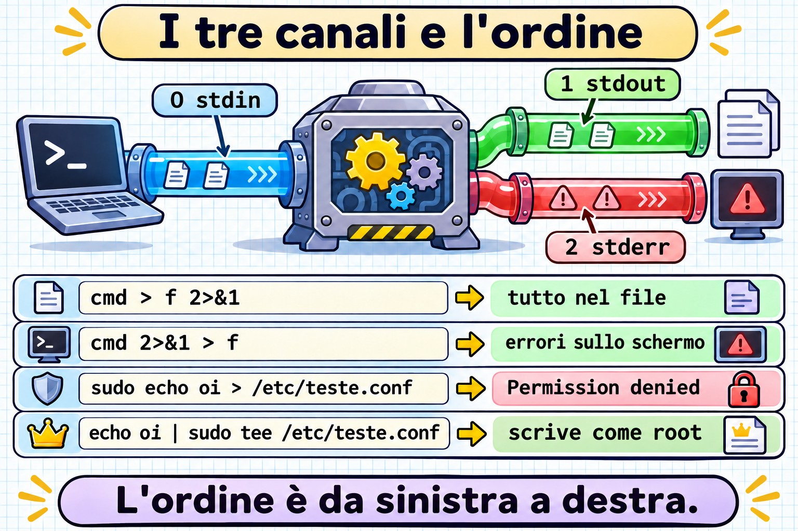
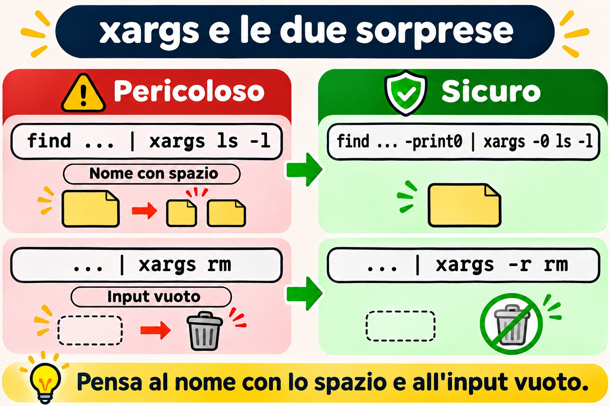
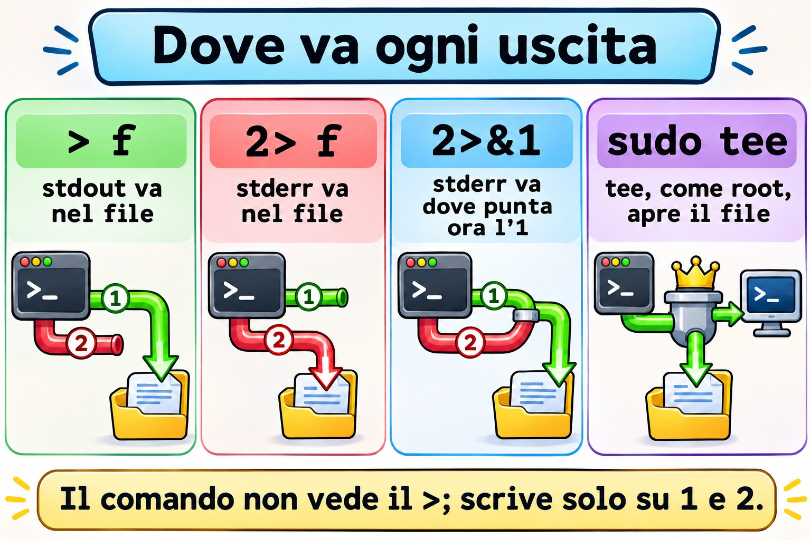
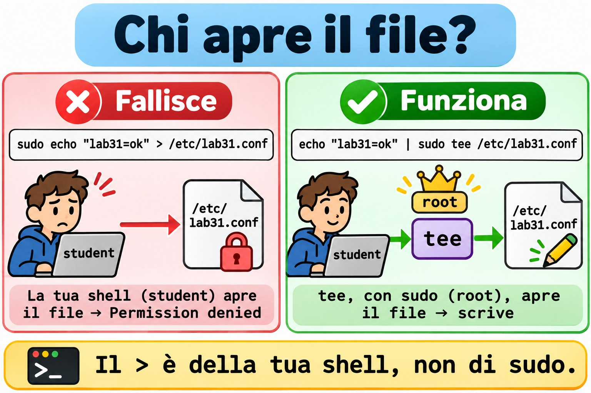
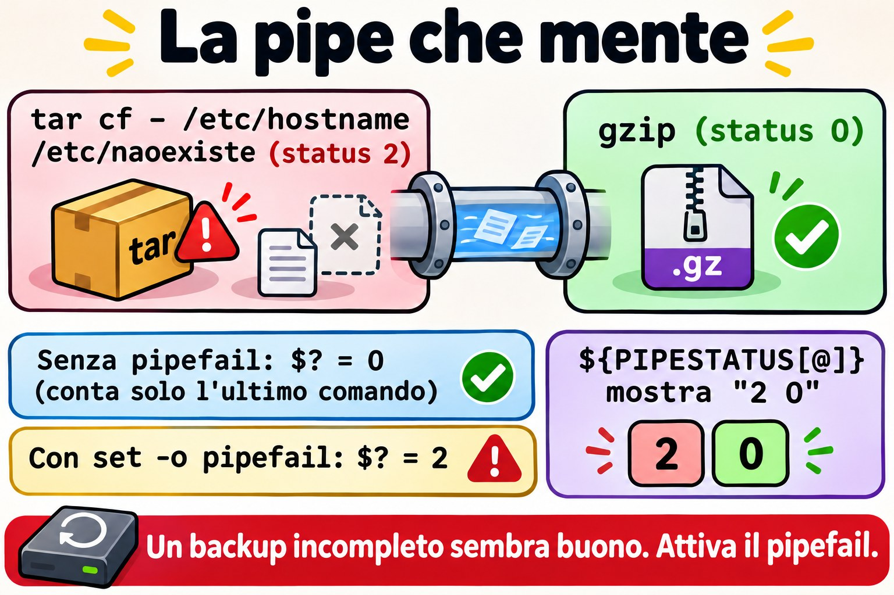
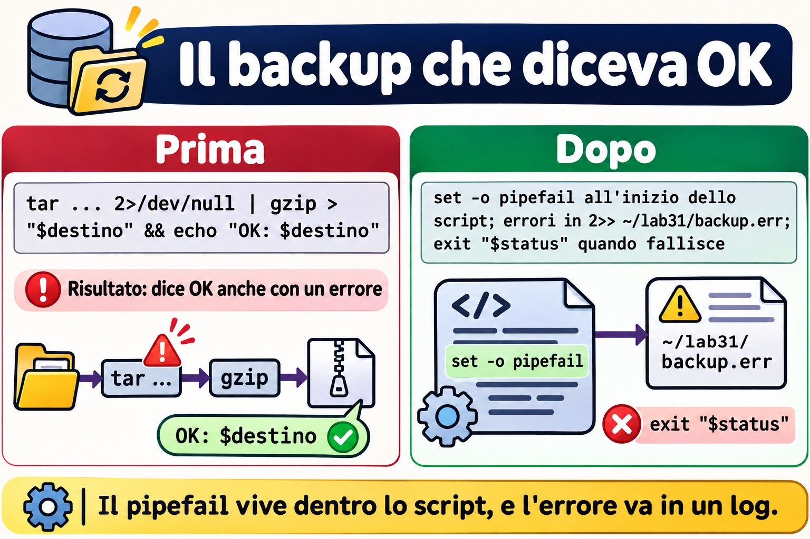

Lezione 3.1 · I flussi a fondo
Prima lezione del Modulo 3 e della Fase 2. Nel Modulo 2 hai costruito utenti, gruppi e una cartella di team che funziona davvero. Due volte, nella Lezione 2.7 e nella Lezione 2.8, un comando con sudo è fallito per un motivo che non era il permesso: l'* è stato espanso dalla tua shell, prima che il sudo partisse. Oggi capisci l'intera famiglia di questi problemi. La shell monta i flussi di un comando (da dove legge, dove scrive, dove vanno gli errori) prima di eseguirlo, e chi non lo sa scrive sudo echo ... > /etc/arquivo, perde gli errori di un backup dentro una pipe e cancella il file sbagliato con uno xargs. Nella Lezione 1.6 hai visto >, >>, 2> e |. Ora arrivano gli strumenti che l'admin usa ogni giorno: tee, xargs, here-doc, process substitution, /dev/null e pipefail, che impedisce alla pipe di nascondere gli errori.
| Scheda | Lezione 3.1 |
|---|---|
| Modulo | M3 · Testo ed editor, lezione 1 di 5 |
| Quando | Settimana 7 |
| Alla fine sei in grado di | Prevedere il risultato di qualsiasi combinazione di >, >>, 2>, 2>&1 e &>, ordine compreso; scrivere in un file di root con sudo tee, senza cadere nel sudo echo >; creare file di configurazione con here-doc, sapendo quando la shell espande le variabili e quando no; usare xargs con nomi che contengono spazi e con input vuoto, senza sorprese; confrontare l'output di due VM con diff <( ) <( ); costruire una pipe di backup che fallisce quando deve fallire, con pipefail e PIPESTATUS; spiegare perché uno script #!/bin/sh si comporta in modo diverso su Rocky e su Debian |
| Prerequisiti | Lezione 1.6 (reindirizzamenti e pipe di base); Lezione 2.5 (sudo); Lezione 2.7 e Lezione 2.8 (l'* espanso prima del sudo, e il sudo sh -c); le due VM raggiungibili, con ssh deb funzionante |
| Durata | Circa 2h30 |
| Snapshot | m3a1-inicio e m3a1-fim su entrambe le VM |
1 · Riscaldamento
Tre domande, a memoria. Scrivi le risposte; le Soluzioni le controllano alla fine.
- Esegui
sudo echo "nameserver 1.1.1.1" > /etc/resolv.confe ottieniPermission denied. Ilsudoè configurato e funziona. Prova a indovinare: perché? - Uno script di backup fa
tar cf - /dados | gzip > /backup/dados.tar.gze termina conecho "status: $?". Iltarfallisce a metà per mancanza di permessi. Prova a indovinare: lo status mostra0o un altro numero? cmd > saida.txt 2>&1ecmd 2>&1 > saida.txt. Prova a indovinare: entrambi salvano gli errori nel file?
2 · Perché conta
I flussi sembrano roba da principianti, finché non diventano un incidente:
| La richiesta | La risposta sbagliata | Cosa provoca |
|---|---|---|
"Devo aggiungere una riga a /etc/hosts da script" | sudo echo "10.1.0.60 app" >> /etc/hosts | Permission denied. Di fretta, qualcuno lo sostituisce con chmod 666 /etc/hosts, e il file resta aperto a qualsiasi account |
| "Il backup gira ogni notte e dice OK, ma il file pesa 40 byte" | Fidarsi del $? in fondo alla pipe | Mesi di backup vuoti. Lo status è quello di gzip, che ha compresso con successo il nulla |
| "Il cron manda una mail ogni notte, spegni tutto" | Aggiungere > /dev/null 2>&1 ovunque | La mail si ferma, e con lei l'unico avviso che il job fallisce da settimane |
"Cancella i vecchi .tmp dalla cartella degli upload" | find /srv/uploads -name '*.tmp' | xargs rm | Il file relatorio final.tmp diventa relatorio e final.tmp; se esiste un relatorio, sparisce al suo posto |
| "Lo script funziona su Rocky e dà un errore di sintassi su Debian" | Riscrivere lo script su Debian | Due versioni dello stesso script. Il problema era il #!/bin/sh: su Debian, sh non è bash |
Chi risolve davvero sa chi apre ogni file, quando e con quale identità. È quello che alleni oggi.
3 · Modello mentale
Ogni processo nasce con tre canali numerati, i file descriptor:
0è l'input (stdin),1è l'output (stdout) e2è l'output degli errori (stderr). Reindirizzare significa la shell cambia dove punta ogni numero, prima che il comando parta, leggendo da sinistra a destra. Il comando non vede mai il>: scrive soltanto sull'1e sul2, senza sapere se sono lo schermo, un file o una pipe.
Você digita: sudo echo oi > /etc/teste.conf
└─────┬─────┘ └───────┬───────┘
│ └─ 1º: o SEU shell (student) abre /etc/teste.conf
│ para escrita. Falha aqui: Permission denied.
└─ 2º: só depois o sudo rodaria, já como root. Nem chega a rodar.
Você digita: echo oi | sudo tee /etc/teste.conf > /dev/null
└──┬──┘ └──────────┬──────────┘ └────┬────┘
│ │ └─ o seu shell abre /dev/null (pode)
│ └─ o tee, rodando como ROOT, abre /etc/teste.conf (pode)
└─ o echo escreve "oi" no pipe, que vira a entrada do tee
A ordem do 2>&1 (o shell lê da esquerda para a direita):
cmd > f 2>&1 1 → f depois 2 → para onde o 1 aponta AGORA (f)
resultado: 1 → f 2 → f tudo no arquivo
cmd 2>&1 > f 2 → para onde o 1 aponta AGORA (tela) depois 1 → f
resultado: 1 → f 2 → tela erros na tela
Um pipe: tar cf - /dados | gzip > dados.tar.gz
└─── processo ───┘ └── processo ──┘
status 2 (falhou) status 0 ──▶ $? = 0 (só o último conta)
${PIPESTATUS[@]} = "2 0" com set -o pipefail: $? = 2Il 2>&1 non vuol dire "unisci gli errori all'output". Vuol dire "fai puntare il 2 dove punta l'1 in questo momento". È una copia, non un legame: se l'1 cambia dopo, il 2 non lo segue.


4 · Concetto a strati
Essenziale
I reindirizzamenti, tutti insieme. Quelli che già conosci e quelli che mancavano:
| Scrivi | Cosa fa la shell |
|---|---|
cmd > f | L'1 va su f, cancellando il contenuto precedente |
cmd >> f | L'1 va in fondo a f |
cmd 2> f | Il 2 va su f |
cmd > f 2>&1 | L'1 e il 2 vanno su f. Funziona in qualsiasi shell |
cmd &> f | Lo stesso, in forma breve. Solo in bash |
cmd 2> /dev/null | Butta via gli errori |
cmd < f | Lo 0 legge da f |
cmd1 | cmd2 | L'1 di cmd1 diventa lo 0 di cmd2. Il 2 continua ad andare sullo schermo |
cmd1 |& cmd2 | L'1 e il 2 di cmd1 vanno nella pipe. Solo in bash; equivale a 2>&1 | |
echo erro >&2 | Scrive sul 2. È così che uno script manda un messaggio di errore |
Il /dev/null. Un dispositivo che accetta tutto e non conserva niente, e che, se lo leggi, finisce subito. Serve per buttare via (2> /dev/null) e per dare un input vuoto a un comando (cmd < /dev/null). Buttare via è una decisione: ciò che finisce in /dev/null non torna indietro.
Il tee. Legge l'input e scrive in due posti: sull'output e nei file che gli indichi. Il nome viene dall'idraulica: un raccordo a T che divide il flusso.
dnf check-update | tee ~/atualizacoes.txt # sullo schermo e nel file
journalctl -b -p err | tee -a ~/erros-boot.txt # -a aggiunge invece di cancellareIn amministrazione, l'uso più importante del tee è un altro: scrivere in un file di root. Chi apre il file è il tee, e il tee può girare con sudo:
echo "10.1.0.60 app" | sudo tee -a /etc/hosts > /dev/nullIl > /dev/null in fondo toglie dallo schermo solo la copia che il tee scrive anche sull'output.
Lo xargs. Una pipe porta testo all'input di un comando. Ma molti comandi non leggono l'input: vogliono argomenti. rm, ls, chmod, ssh ignorano ciò che arriva dallo 0. Lo xargs legge l'input e lo trasforma in argomenti:
echo "/etc/hostname /etc/os-release" | ls -l # ls ignora l'input e elenca la cartella corrente
echo "/etc/hostname /etc/os-release" | xargs ls -l # xargs esegue: ls -l /etc/hostname /etc/os-releaseIl here-doc. Un blocco di testo che diventa l'input di un comando, scritto nel terminale stesso o in uno script. È il modo pulito per creare un intero file di configurazione:
sudo tee /etc/motd > /dev/null <<'EOF'
Servidor de laboratório. Mudanças só com chamado aberto.
EOFIl <<'EOF' dice: "l'input è tutto quello che arriva fino a una riga che contiene solo EOF". Il nome EOF è una convenzione; può essere una parola qualsiasi.
Intermedio
L'ordine conta, sempre. La shell applica i reindirizzamenti da sinistra a destra, e ogni N>&M copia la destinazione attuale di M. Per questo:
ls /etc/hostname /naoexiste > f 2>&1 # tutto in f
ls /etc/hostname /naoexiste 2>&1 > f # l'errore sullo schermo, l'elenco in f
ls /etc/hostname /naoexiste 2>&1 | wc -l # 2: nella pipe, il | viene montato PRIMA dei reindirizzamentiLa terza riga inganna molti: il | viene collegato per primo, quindi quando il 2>&1 viene letto l'1 è già la pipe, e tutti e due vanno a wc.
Le virgolette nel here-doc decidono tutto. Senza virgolette sulla parola (<<EOF), la shell espande $VARIAVEL, $(comando) e `comando` nel momento in cui crea il testo. Con le virgolette (<<'EOF'), il testo resta esattamente come l'hai scritto. Per generare uno script, quasi sempre vuoi le virgolette: le variabili devono essere lette quando gira lo script, non quando lo crei.
cat <<EOF
criado em $(hostname) por $USER
EOF
# criado em rocky-lab por student
cat <<'EOF'
criado em $(hostname) por $USER
EOF
# criado em $(hostname) por $USERIl <<-EOF, con il trattino, toglie le tabulazioni a inizio di ogni riga, così puoi indentare il blocco dentro un if in uno script. Solo tabulazioni: gli spazi restano.
Il here-string. Il <<< passa una singola stringa come input, senza echo e senza pipe:
tr a-z A-Z <<< "rocky-lab" # ROCKY-LAB
read -r usuario uid <<< "ana 2001"Lo xargs e i nomi con gli spazi. Per impostazione predefinita, lo xargs divide l'input a qualsiasi spazio, tabulazione o a capo, e interpreta anche virgolette e backslash. Un file chiamato relatorio final.txt diventa due argomenti, e uno chiamato conta d'agua.txt dà unmatched single quote. La soluzione è separare con un carattere che non può esistere in un nome di file, il nullo (\0), da entrambi i lati:
find ~/lab31 -name '*.txt' -print0 | xargs -0 ls -lOppure fare a meno di xargs, con il -exec ... + di find, che costruisce la riga di comando senza passare per il testo:
find ~/lab31 -name '*.txt' -exec ls -l {} +Opzioni di xargs che userai:
| Opzione | Cosa fa | Esempio |
|---|---|---|
-0 | Input separato da nullo (la coppia di find -print0) | find . -print0 | xargs -0 ... |
-r | Non esegue niente se l'input è vuoto | ... | xargs -r rm |
-n N | Al massimo N argomenti per esecuzione | xargs -n 1 ping -c1 |
-I{} | Un'esecuzione per riga, sostituendo {} con la riga | xargs -I{} cp {} {}.bak |
-t | Mostra ogni comando prima di eseguirlo | xargs -t chmod 640 |
-P N | Fino a N esecuzioni contemporanee | xargs -P 4 -n 1 ... |
Il -r merita attenzione: lo xargs di GNU, che è quello delle due VM, esegue il comando una volta, senza alcun argomento, quando l'input arriva vuoto. Un ls -l senza argomenti elenca la cartella corrente; un chown -R ana senza argomenti si limita a lamentarsi. Ma un report che dovrebbe essere vuoto appare pieno di roba che non c'entra niente.


La process substitution. Il <(comando) esegue il comando e consegna il suo output come se fosse un file. Serve per i comandi che accettano solo nomi di file, come diff, che confronta due file:
diff <(ssh deb 'cat /etc/os-release') /etc/os-release
echo <(true) # /dev/fd/63: il "file" è un descriptor aperto da bashSenza questo, salveresti due output in file temporanei, li confronteresti e poi li cancelleresti. È una funzione di bash: lo sh di Debian non la capisce.
La pipe nasconde gli errori. Lo status di una pipe è quello dell'ultimo comando. In un dump | gzip > arquivo, se il dump muore a metà, gzip comprime ciò che è arrivato, termina con 0, e l'intera pipe dice che è andato tutto bene. Due strumenti di bash:
false | true; echo "$?" # 0
false | true; echo "${PIPESTATUS[@]}" # 1 0: lo status di ogni comando, in ordine
set -o pipefail
false | true; echo "$?" # 1: la pipe fallisce se un qualsiasi comando fallisceIl PIPESTATUS viene sovrascritto dal comando successivo, anche da un echo: leggilo subito dopo, oppure copialo in un'altra variabile. Il set -o pipefail vale per la shell in cui l'hai attivato, finché non termina; in uno script, mettilo all'inizio.
Ponte Windows
| In Windows (cmd o PowerShell) | In Linux | La differenza che conta |
|---|---|---|
dir > lista.txt 2>&1 (cmd) | ls > lista.txt 2>&1 | Uguale, ordine compreso. Il cmd ha imparato da Unix |
> NUL | > /dev/null | In Linux è un vero file di dispositivo, con proprietario e modo |
Tee-Object -FilePath f | tee f | Il tee accetta più file e il -a |
ForEach-Object { ... } con l'oggetto nella pipe | xargs | PowerShell passa oggetti nella pipe; Linux passa testo, e lo xargs deve sapere dove finisce un elemento e inizia il successivo |
@" ... "@ e @' ... '@ (here-string) | <<EOF e <<'EOF' (here-doc) | La stessa idea per le virgolette: le doppie espandono le variabili, le singole no |
Compare-Object (cmd1) (cmd2) | diff <(cmd1) <(cmd2) | In Linux, l'output diventa un "file" /dev/fd/N |
$LASTEXITCODE e $? | $? e ${PIPESTATUS[@]} | In PowerShell, un errore a metà pipe emerge; in bash, senza pipefail, sparisce |
| "Esegui come amministratore" sull'intero terminale | sudo su un comando, o sudo tee su un file | In Linux, l'elevazione è per processo: il > della tua shell resta sempre tu |
Avanzato
Il sudo e la shell, la regola generale. La tua shell fa quattro cose prima che il sudo esista: espande * e ? (Lezione 2.7), espande $VARIAVEL e $(comando), apre i reindirizzamenti e collega le pipe. Tutto questo avviene come te. Le tre vie d'uscita, a seconda del caso:
| Vuoi | Usa |
|---|---|
| Scrivere o aggiungere in un file di root | ... | sudo tee [-a] arquivo > /dev/null |
Una riga con reindirizzamenti, * o pipe, tutto come root | sudo sh -c 'cmd1 | cmd2 > /etc/arquivo' |
| Un intero blocco di configurazione | sudo tee arquivo > /dev/null <<'EOF' ... EOF |
| Leggere un file di root in una pipe | sudo cat arquivo | grep ...; il grep non ha bisogno di root |
Il noclobber. Con set -o noclobber, il > si rifiuta di cancellare un file che esiste già (cannot overwrite existing file). Quando vuoi davvero sovrascrivere, usi >|. È una buona rete di sicurezza per la shell interattiva di chi amministra un server.
Reindirizzare l'intero script. L'exec senza comando cambia i descriptor della shell stessa, finché non termina. La prima riga qui sotto, all'inizio di uno script, manda tutto ciò che scrive, output ed errori, sullo schermo e in un log allo stesso tempo:
exec > >(tee -a /var/log/meu-script.log) 2>&1
exec 2>> /var/log/meu-script.err # oppure: solo gli errori, in un filesh non è bash dappertutto. Su Rocky, /bin/sh è bash stesso, in modalità di compatibilità POSIX: quasi tutto ciò che è di bash continua a funzionare. Su Debian, /bin/sh è dash, una shell più piccola e veloce, che capisce solo lo standard POSIX. In uno script #!/bin/sh su Debian, o in un sh -c '...':
Funzione di bash | In dash |
|---|---|
<( ) | Syntax error: "(" unexpected |
&> f | Letto come & (esegui in background) seguito da > f. Il comando va in background e l'output non viene reindirizzato. Nessun messaggio di errore |
|& | Errore di sintassi |
<<< | Errore di sintassi |
PIPESTATUS | Non esiste: è vuoto |
set -o pipefail | Dipende dalla versione di dash: è entrato nello standard POSIX solo nel 2024. In uno #!/bin/sh, non contarci |
La soluzione non è evitare bash: è scrivere #!/bin/bash quando lo script usa bash, ed eseguirlo con bash script.sh, mai con sh script.sh.
La pipe con nome. Un mkfifo /tmp/canal crea un file di tipo p, che funziona come una pipe con un nome: un processo scrive, un altro legge, e niente viene salvato su disco. È ciò che fa il <( ) sotto il cofano, in forma anonima.
5 · Rocky × Debian
| Cosa | rocky-lab | debian-lab | Come verificare |
|---|---|---|---|
/bin/sh | bash (modalità POSIX) | dash | readlink -f /bin/sh |
Shell di login di student | bash | bash | getent passwd student |
<( ), &>, PIPESTATUS in un sh -c | Funzionano | Errore di sintassi, o comportamento sbagliato senza avviso | sh -c 'diff <(echo a) <(echo b)' |
tee, xargs, find | GNU (coreutils e findutils) | GNU (coreutils e findutils) | xargs --version | head -1 |
xargs con input vuoto | Esegue il comando una volta | Esegue il comando una volta | true | xargs echo ok |
Log di testo in /var/log | rsyslog installato: /var/log/messages e /var/log/secure | Debian 12 non include rsyslog: i log restano solo nel journal | ls /var/log/messages /var/log/secure /var/log/syslog /var/log/auth.log |
Leggere il journal di sistema come student | Tramite il gruppo wheel | Solo con sudo, o nel gruppo adm | journalctl -n 3, senza sudo |
La riga dei log sarà importante per tutto il Modulo 3: la stessa domanda ("chi ha sbagliato la password su SSH?") si risolve con un file su Rocky e con journalctl su Debian. Una pipe ben costruita funziona uguale su entrambe, purché tu sappia cosa c'è nel suo input.
6 · Lab guidato
Sei student, su rocky-lab, e raggiungi debian-lab con ssh deb. Gli esperimenti stanno in ~/lab31, su entrambe le VM; solo il Passo 2 tocca un file di sistema, /etc/lab31.conf, che resta fino alla fine del modulo, così lo controlli dopo il reboot. Il Passo 7 è la sfida della lezione.


Passo 0 · Snapshot, percorso e quale sh è quale
In Proxmox, fai lo snapshot m3a1-inicio di entrambe le VM. Su rocky-lab:
eval "$(ssh-agent -s)"; ssh-add
ssh -o BatchMode=yes deb hostname
readlink -f /bin/sh; ssh deb 'readlink -f /bin/sh'
mkdir -p ~/lab31; ssh deb 'mkdir -p ~/lab31'
cd ~/lab31debian-lab
/usr/bin/bash
/usr/bin/dashTieni a mente le ultime due righe: su rocky-lab, sh è bash; su debian-lab, è dash. Il Passo 6 mostra cosa cambia.
Passo 1 · L'ordine del 2>&1
Un file che esiste e uno che non esiste, per avere output e errore nello stesso comando:
ls /etc/hostname /naoexiste > a.txt 2>&1Non compare niente sullo schermo: le due righe sono finite in a.txt. Ora, con il 2>&1 prima:
Decidi 1 · Esegui ls /etc/hostname /naoexiste 2>&1 > b.txt. Cosa compare sullo schermo, e cosa resta in b.txt?
- A) Niente sullo schermo;
b.txtha le due righe - B) L'errore sullo schermo;
b.txtha solo/etc/hostname - C) Le due righe sullo schermo;
b.txtresta vuoto - D) Niente sullo schermo;
b.txtha solo l'errore
Scegli un'opzione prima di continuare.
ls /etc/hostname /naoexiste 2>&1 > b.txt
echo "--- a.txt"; cat a.txt; echo "--- b.txt"; cat b.txt| Se hai scelto | Risultato | Perché |
|---|---|---|
| A | ❌ Sbagliato | Sarebbe il risultato del primo comando. Qui la shell legge prima il 2>&1, quando l'1 punta ancora allo schermo, e copia quella destinazione sul 2. Solo dopo il > b.txt cambia l'1. |
| B | ✅ Giusto | ls: cannot access '/naoexiste': No such file or directory sullo schermo, e b.txt solo con /etc/hostname. Il 2 è rimasto con la vecchia destinazione dell'1. |
| C | ❌ Sbagliato | Il > b.txt è stato applicato: l'output normale è andato nel file. Solo l'errore è rimasto fuori. |
| D | ❌ Sbagliato | Inverte i ruoli. Il 2>&1 non "scambia" l'1 con il 2; copia la destinazione dell'1 sul 2. |
Da ricordare: leggi i reindirizzamenti da sinistra a destra, e tratta il 2>&1 come "il 2 va dove si trova l'1 adesso". Vuoi tutto nel file? Prima il file: > f 2>&1.
Passo 2 · Il sudo che non raggiunge il >
Vuoi creare un file di configurazione di sistema, di una riga:
sudo echo "lab31=ok" > /etc/lab31.conf-bash: /etc/lab31.conf: Permission deniedIl sudo è configurato, e la password non è stata nemmeno chiesta.
Decidi 2 · Perché il Permission denied?
- A)
echoè un comando interno della shell, e ilsudonon esegue comandi interni - B) Chi apre
/etc/lab31.confè la tua shell, comestudent, prima che ilsudoparta - C) SELinux protegge
/etce blocca l'echo - D) Mancava il
-i: consudo -ifunziona
Scegli un'opzione prima di continuare.
ls -l /etc/lab31.conf
ssh deb 'sudo echo "lab31=ok" > /etc/lab31.conf'| Se hai scelto | Risultato | Perché |
|---|---|---|
| A | ❌ Sbagliato | Il sudo cerca un programma, e trova /usr/bin/echo. Verrebbe eseguito, come root, se arrivasse a partire. Il file non è nemmeno stato creato, e l'errore è venuto da -bash, non da echo. |
| B | ✅ Giusto | Il reindirizzamento è della shell. Il bash di student prova ad aprire /etc/lab31.conf in scrittura, non ci riesce, e rinuncia prima di chiamare il sudo. È la stessa famiglia dell'* della Lezione 2.7: tutto ciò che la shell fa prima del comando, lo fa come te. |
| C | ❌ Sbagliato | debian-lab non ha SELinux e dà lo stesso errore, come ssh deb ha appena mostrato. Un blocco di SELinux, inoltre, non apparirebbe come errore di bash. |
| D | ⚠️ Funziona, ma | Con sudo -i apri una shell di root, e lì il > funziona. Ma è un'intera shell di root per scrivere una riga, in un terminale dove anche il prossimo errore di battitura gira come root. E in uno script non va bene: il sudo -i aspetta che tu digiti. |
Da ricordare: un Permission denied che arriva da -bash: in un comando con sudo significa che è fallita la shell, non il comando. Cerca un >, un * o un $( ) nella riga.
I tre modi giusti, uno alla volta:
echo "lab31=ok" | sudo tee /etc/lab31.conf
echo "criado=$(date +%F)" | sudo tee -a /etc/lab31.conf > /dev/null
sudo sh -c 'echo "via=sh-c" >> /etc/lab31.conf'
cat /etc/lab31.conf
stat -c '%A %U:%G %n' /etc/lab31.confIl primo tee mostra lab31=ok sullo schermo, perché copia anche sull'output. Il secondo non mostra niente: il > /dev/null ha buttato via la copia. Alla fine, il file ha tre righe ed è -rw-r--r-- root:root, creato dal tee, come root.
Su debian-lab, il modo a blocco, con here-doc. Entra nella VM, perché il sudo chiederà la password e ha bisogno del terminale:
ssh deb
sudo tee /etc/lab31.conf > /dev/null <<'EOF'
lab31=ok
via=here-doc
EOF
cat /etc/lab31.conf
exit

Passo 3 · Il here-doc che ha congelato il valore sbagliato
Vuoi un piccolo script che dica su che macchina sta girando, da copiare sulle due VM. Su rocky-lab:
cat > ~/lab31/info.sh <<EOF
#!/bin/bash
echo "máquina: $(hostname)"
echo "usuário: $USER"
EOF
chmod +x ~/lab31/info.sh
ssh deb 'cat > ~/lab31/info.sh; chmod +x ~/lab31/info.sh' < ~/lab31/info.shL'ultima riga copia lo script su debian-lab senza scp: il < consegna il file locale come input di ssh, e il cat dall'altra parte lo scrive.
Decidi 3 · Esegui ssh deb '~/lab31/info.sh'. Qual è la prima riga dell'output?
- A)
máquina: debian-lab - B)
máquina: rocky-lab - C)
máquina: $(hostname) - D) Un errore di
bash, perché il file arriva da un'altra macchina
Scegli un'opzione prima di continuare.
ssh deb '~/lab31/info.sh'
cat ~/lab31/info.sh| Se hai scelto | Risultato | Perché |
|---|---|---|
| A | ❌ Sbagliato | Sarebbe giusto se lo script contenesse il $(hostname). Il cat mostra che non c'è: la riga è echo "máquina: rocky-lab". |
| B | ✅ Giusto | Senza virgolette sull'EOF, la shell ha espanso $(hostname) e $USER nel momento in cui ha creato il file, su rocky-lab. Lo script è nato con i valori congelati. Su debian-lab si limita a ripetere ciò che ha ricevuto. |
| C | ❌ Sbagliato | Sarebbe il testo del file con <<'EOF'. Anche così, quando lo esegui, lo script mostrerebbe il nome giusto, perché a quel punto a espandere è il bash dello script. |
| D | ❌ Sbagliato | Uno script è testo: vale su qualsiasi macchina con l'interprete indicato nella prima riga. Debian ha /bin/bash. |
Da ricordare: un here-doc che genera uno script o una configurazione con variabili da usare dopo vuole le virgolette: <<'EOF'. Senza virgolette, solo quando vuoi davvero il valore di adesso, come una data di creazione.
Correggi, copia di nuovo ed esegui su entrambe:
cat > ~/lab31/info.sh <<'EOF'
#!/bin/bash
echo "máquina: $(hostname)"
echo "usuário: $USER"
EOF
ssh deb 'cat > ~/lab31/info.sh' < ~/lab31/info.sh
~/lab31/info.sh; ssh deb '~/lab31/info.sh'Ora ogni VM dice il proprio nome. Il chmod +x non ha avuto bisogno di essere ripetuto: il > riscrive il contenuto, e il modo del file resta.
Passo 4 · Lo xargs e il nome con lo spazio
Due file, uno dei quali con uno spazio nel nome, come succede in qualsiasi cartella che riceve file dalle persone:
mkdir -p ~/lab31/xa
touch ~/lab31/xa/notas.txt "$HOME/lab31/xa/relatorio final.txt"
ls ~/lab31/xaVuoi l'ls -l di tutti i .txt di quella cartella, trovati con find.
Decidi 4 · Esegui find ~/lab31/xa -name '*.txt' | xargs ls -l. Cosa succede?
- A) L'
ls -lmostra entrambi i file - B) L'
ls -lmostranotas.txte dà due errori, uno perrelatorioe uno perfinal.txt - C) Lo
xargsrifiuta l'input a causa dello spazio - D) L'
ls -lmostra solorelatorio final.txt
Scegli un'opzione prima di continuare.
find ~/lab31/xa -name '*.txt' | xargs ls -l| Se hai scelto | Risultato | Perché |
|---|---|---|
| A | ❌ Sbagliato | Sarebbe vero se lo xargs dividesse solo per riga. Divide a qualsiasi spazio, e il nome è diventato due argomenti. |
| B | ✅ Giusto | ls: cannot access '/home/student/lab31/xa/relatorio': No such file or directory e ls: cannot access 'final.txt': .... Con ls, è solo un errore sullo schermo. Con rm, se nella cartella esistesse un file relatorio, verrebbe cancellato al posto di quello giusto. |
| C | ❌ Sbagliato | Lo xargs si lamenta solo delle virgolette senza coppia (un nome come conta d'agua.txt). Lo spazio lo accetta e divide, senza avvisare. |
| D | ❌ Sbagliato | Il nome con lo spazio è esattamente ciò che si perde. |
Da ricordare: find | xargs senza -print0 e -0 è un bug che aspetta il primo nome con uno spazio. Usa la coppia, oppure il -exec ... + di find.
Le due correzioni:
find ~/lab31/xa -name '*.txt' -print0 | xargs -0 ls -l
find ~/lab31/xa -name '*.txt' -exec ls -l {} +Entrambe mostrano i due file. Il -print0 termina ogni nome con un byte nullo, e il -0 fa dividere lo xargs solo su quello. Il -exec ... + costruisce direttamente la riga di comando, senza trasformarsi in testo a metà strada.
Passo 5 · La pipe che mente
Un backup in una riga, come compare in molti script di cron: il tar impacchetta, il gzip comprime. Uno dei percorsi non esiste, come una directory che qualcuno ha rinominato:
tar cf - /etc/hostname /etc/naoexiste | gzip > ~/lab31/bkp.tar.gz
echo "status: $?"Il tar si lamenta sullo schermo: tar: /etc/naoexiste: Cannot stat: No such file or directory e tar: Exiting with failure status due to previous errors.
Decidi 5 · Che numero mostra l'echo?
- A)
0 - B)
2, lo status deltar - C)
1 - D)
141, perché la pipe è stata interrotta
Scegli un'opzione prima di continuare.
tar cf - /etc/hostname /etc/naoexiste | gzip > ~/lab31/bkp.tar.gz; echo "${PIPESTATUS[@]}"| Se hai scelto | Risultato | Perché |
|---|---|---|
| A | ✅ Giusto | Lo status di una pipe è quello dell'ultimo comando, e il gzip ha compresso senza problemi ciò che ha ricevuto. Il PIPESTATUS mostra la verità: 2 0. In un cron, il && echo OK dopo questo direbbe OK ogni giorno. |
| B | ❌ Sbagliato | Il 2 esiste, ma è nascosto nel PIPESTATUS. Senza pipefail, la pipe non lo ritrasmette. |
| C | ❌ Sbagliato | Nessuno dei due comandi è terminato con 1. Il tar di GNU usa 2 per l'errore fatale, e 1 per "un file è cambiato mentre lo leggevo". |
| D | ❌ Sbagliato | Il 141 (128 + 13, il segnale SIGPIPE) compare quando il comando a destra chiude la pipe in anticipo, come un head, e quello a sinistra muore mentre scrive. Qui il gzip ha letto tutto. |
Da ricordare: in una pipe, $? è lo status dell'ultimo comando. Per backup, deploy e qualsiasi cosa che decida "è andato bene", attiva il pipefail o controlla il PIPESTATUS.
Attiva il pipefail in questa shell e ripeti:
set -o pipefail
tar cf - /etc/hostname /etc/naoexiste | gzip > ~/lab31/bkp.tar.gz; echo "status: $?"
tar tzf ~/lab31/bkp.tar.gzOra lo status è 2. Il tar tzf mostra che etc/hostname è nell'archivio: il backup non è vuoto, è incompleto, che è peggio, perché sembra buono. Il pipefail resta attivo in questa shell finché non ne esci o esegui set +o pipefail; lascialo attivo per il Passo 7.


Passo 6 · Due VM, un diff, e lo sh di Debian
Confronta l'identificazione delle due VM, senza file temporanei:
diff <(grep -E '^(ID|VERSION_ID)=' /etc/os-release | sort) \
<(ssh deb "grep -E '^(ID|VERSION_ID)=' /etc/os-release | sort")1,2c1,2
< ID="rocky"
< VERSION_ID="9.6"
---
> ID=debian
> VERSION_ID="12"Il numero di versione di Rocky può essere diverso. Il < mostra le righe del primo "file", e il > quelle del secondo. Il diff ha ricevuto due nomi, /dev/fd/63 e /dev/fd/62, e non ha mai saputo che fossero comandi. Il | sort da entrambi i lati serve a evitare che l'ordine delle righe diventi una differenza.
Ora, la stessa funzione dentro un sh -c, come succede in uno script #!/bin/sh o in una riga di cron:
Decidi 6 · Esegui sh -c 'diff <(echo a) <(echo b)' su rocky-lab e su debian-lab. Cosa succede?
- A) Funziona su entrambe: il
diffmostraaeb - B) Dà errore su entrambe: il
<( )funziona solo nel terminale - C) Funziona su rocky-lab e dà un errore di sintassi su debian-lab
- D) Funziona su debian-lab e dà errore su rocky-lab
Scegli un'opzione prima di continuare.
sh -c 'diff <(echo a) <(echo b)'
ssh deb "sh -c 'diff <(echo a) <(echo b)'"| Se hai scelto | Risultato | Perché |
|---|---|---|
| A | ❌ Sbagliato | Sarebbe vero se lo sh fosse lo stesso programma su entrambe. Il Passo 0 ha mostrato che non lo è. |
| B | ❌ Sbagliato | Il <( ) è di bash, interattivo o no. Uno script #!/bin/bash lo usa tranquillamente. |
| C | ✅ Giusto | Su rocky-lab, sh è bash in modalità POSIX, che accetta il <( ). Su debian-lab, dash risponde sh: 1: Syntax error: "(" unexpected. Lo stesso script, due distribuzioni, due risultati. |
| D | ❌ Sbagliato | Inverte le VM. Lo sh più restrittivo è quello di Debian. |
Da ricordare: uno script che usa una funzione di bash comincia con #!/bin/bash e si esegue con bash script.sh. "Funziona su Rocky" non dimostra niente su Debian, perché lo sh di Rocky è bash.
Il caso peggiore di dash non dà errore. Guarda il &>:
ssh deb "sh -c 'ls /naoexiste &> /dev/null; echo fim'"L'errore di ls compare sullo schermo, e a volte dopo il fim. Il dash ha letto ls /naoexiste & (esegui in background) e > /dev/null (un reindirizzamento da solo, senza comando). L'ls è finito in background, senza alcun reindirizzamento. In uno script di cron, questo significa un output che credevi silenziato e un comando che non era terminato quando pensavi. Il modo portabile è > /dev/null 2>&1.
Passo 7 · Sfida della lezione: il report delle due VM
Il compito, come arriverebbe in una richiesta: "voglio un report delle due VM, in un file, con il nome della macchina, l'uptime e l'uso del disco root. Gli errori in un file separato. Voglio vederlo sullo schermo mentre gira. E se una qualsiasi parte fallisce, il comando deve terminare con errore, così il monitoraggio se ne accorge."
Prova da solo prima di leggere la soluzione. I pezzi: un gruppo di comandi { ...; }, ssh deb, il 2>, il tee e il pipefail.
La soluzione:
set -o pipefail
{ hostname; uptime; df -h /; ssh deb 'hostname; uptime; df -h /'; } 2> ~/lab31/erros.txt | tee ~/lab31/relatorio.txt
echo "status: $?"
wc -l ~/lab31/relatorio.txt ~/lab31/erros.txtIl { ...; } raggruppa i comandi in un unico blocco, con un output e uno status. Il 2> del gruppo manda gli errori di tutti in erros.txt. Il tee mostra e scrive. Lo status è 0, e erros.txt ha 0 righe.
Ora simula il guasto: debian-lab spenta. Sostituisci deb con deb-x, un nome che non esiste:
{ hostname; uptime; df -h /; ssh deb-x 'hostname; uptime; df -h /'; } 2> ~/lab31/erros.txt | tee ~/lab31/relatorio.txtDecidi 7 · Con il pipefail attivo, che status mostra l'echo "status: $?" subito dopo?
- A)
0, perché ilteeha scritto il file - B)
255, lo status dissh - C)
1, perché uno dei comandi è fallito - D)
2, perché c'è stato un errore nell'output degli errori
Scegli un'opzione prima di continuare.
echo "status: $?"
cat ~/lab31/erros.txt| Se hai scelto | Risultato | Perché |
|---|---|---|
| A | ❌ Sbagliato | Sarebbe il risultato senza il pipefail: l'ultimo comando della pipe è il tee, che è terminato bene. Con il pipefail, vale l'ultimo status diverso da zero della pipe. |
| B | ✅ Giusto | ssh usa 255 per un errore suo (Could not resolve hostname deb-x, in erros.txt). Il gruppo termina con lo status del suo ultimo comando, ssh; il pipefail lo ritrasmette. Il monitoraggio vede 255 e sa che è stata la connessione, non il comando remoto. |
| C | ❌ Sbagliato | Il pipefail non riassume in 1: ritrasmette il numero vero, che dice cosa è fallito. |
| D | ❌ Sbagliato | Scrivere sul 2 non cambia nessuno status. Lo status è il numero con cui termina ogni processo. |
Da ricordare: lo status di un gruppo { } è quello dell'ultimo comando al suo interno. Se ssh deb-x fosse all'inizio del gruppo e df alla fine, il gruppo terminerebbe con 0, anche con pipefail. Per un report che deve fallire in qualsiasi punto, eseguilo in uno script con set -e -o pipefail, che torna con più dettagli nel modulo sugli script.
Riporta il report allo stato buono, eseguendo di nuovo la riga con deb.
7 · Rompi e ripara
Guasto A · Il backup che diceva OK
Lo scenario: uno script di backup della configurazione gira ogni giorno nel cron e scrive sempre OK nel log. Nessuno ha mai dovuto ripristinare. Monta lo script com'è in produzione, su rocky-lab:
cat > ~/lab31/backup.sh <<'EOF'
#!/bin/bash
destino=~/lab31/etc-$(date +%F).tar.gz
tar cf - /etc/lab31.conf /etc/hostname /etc/naoexiste 2>/dev/null | gzip > "$destino" && echo "OK: $destino"
EOF
chmod +x ~/lab31/backup.sh
~/lab31/backup.shOsserva. L'output è OK: /home/student/lab31/etc-2026-11-03.tar.gz (con la data di oggi), senza alcun avviso. /etc/naoexiste è nell'elenco, e il pipefail è attivo nel tuo terminale dal Passo 5.
Diagnostica. Esegui la pipe a mano, con il PIPESTATUS, e guarda cosa è finito nel file:
tar cf - /etc/lab31.conf /etc/hostname /etc/naoexiste 2>/dev/null | gzip > /dev/null; echo "${PIPESTATUS[@]}"
tar tzf ~/lab31/etc-$(date +%F).tar.gz2 0
etc/lab31.conf
etc/hostnameSono due problemi sovrapposti. Il 2>/dev/null ha buttato via l'unico messaggio che diceva cosa mancava. E il && ha guardato lo status della pipe, che è quello del gzip. Il pipefail del tuo terminale non ha aiutato: lo script gira in un altro bash, che nasce con le opzioni predefinite.
Decidi A · La riparazione. Cosa fai?
- A) Eseguire
set -o pipefailnel terminale prima di chiamare lo script - B) Mettere
set -o pipefailall'inizio dello script, sostituire il2>/dev/nullcon un log degli errori e gestire lo status - C) Sostituire il
&&con;, così l'echogira sempre - D) Sostituire la pipe con
tar czf "$destino" ..., che comprime da solo
Scegli un'opzione prima di continuare.
| Se hai scelto | Risultato | Perché |
|---|---|---|
| A | ❌ Sbagliato | L'hai appena visto: il terminale aveva già il pipefail e lo script ha detto OK. Le opzioni di set non passano a un processo nuovo, e il cron non ha nemmeno il tuo terminale. |
| B | ✅ Giusto | Il pipefail dentro lo script fa fallire la pipe quando il tar fallisce, e il log degli errori conserva il motivo. Lo script esce con lo status giusto, che il cron e il monitoraggio vedono. |
| C | ❌ Sbagliato | Peggiora: l'OK compare anche quando il gzip fallisce. |
| D | ⚠️ Funziona, ma | Senza pipe, il $? è quello del tar, e il && torna a funzionare. Risolve questo script. Ma il 2>/dev/null continua a nascondere quale file mancava, e l'abitudine della pipe senza pipefail tornerà nel prossimo script, con mysqldump | gzip o pg_dump | ssh. |
Da ricordare: in uno script, il pipefail vive dentro lo script. E un 2>/dev/null in un backup è la decisione di non sapere perché è fallito.


Ripara.
cat > ~/lab31/backup.sh <<'EOF'
#!/bin/bash
set -o pipefail
destino=~/lab31/etc-$(date +%F).tar.gz
tar cf - /etc/lab31.conf /etc/hostname /etc/naoexiste 2>> ~/lab31/backup.err | gzip > "$destino"
status=$?
if [ "$status" -ne 0 ]; then
echo "FALHOU: status $status, veja ~/lab31/backup.err" >&2
exit "$status"
fi
echo "OK: $destino"
EOF
~/lab31/backup.sh; echo "saiu com $?"
tail -n 2 ~/lab31/backup.errOra lo script dice FALHOU: status 2, esce con 2, e backup.err mostra il Cannot stat di /etc/naoexiste. Togli /etc/naoexiste dalla riga del tar (con nano o ricreando il file) ed eseguilo di nuovo: OK, e saiu com 0. Il chmod +x non ha avuto bisogno di essere ripetuto.
Guasto B · Il report che ha trovato ciò che non esiste
Lo scenario: prima di una pulizia, qualcuno chiede "quanto spazio occupano i .bak della cartella degli upload". Un collega risponde con una riga, eseguita dalla cartella personale:
cd ~
find ~/lab31/xa -name '*.bak' -print0 | xargs -0 du -schOsserva. La risposta arriva con una dimensione, e l'ultima riga dice total:
1.2M .
1.2M totalIl numero dipende da ciò che c'è nella tua cartella personale. Il collega stava già per programmare la pulizia.
Diagnostica. Quanti .bak esistono, e che comando ha eseguito davvero lo xargs?
find ~/lab31/xa -name '*.bak' | wc -l
find ~/lab31/xa -name '*.bak' -print0 | xargs -0 -t du -schIl find trova 0 file. Il -t mostra la riga che lo xargs ha eseguito: du -sch, senza alcun argomento. Senza argomenti, il du misura la cartella corrente, il . della prima riga. Lo xargs di GNU esegue il comando una volta, anche con l'input vuoto.
Decidi B · La riparazione. Cosa usi?
- A)
xargs -0 -r du -sch - B)
xargs -0 -n 1 du -sch - C)
xargs -0 du -sch 2>/dev/null - D)
find ~/lab31/xa -name '*.bak' -exec du -sch {} +
Scegli un'opzione prima di continuare.
| Se hai scelto | Risultato | Perché |
|---|---|---|
| A | ✅ Giusto | Il -r (--no-run-if-empty) fa sì che lo xargs non esegua niente quando l'input arriva vuoto. Senza .bak, la risposta è vuota, che è la verità. |
| B | ❌ Sbagliato | Il -n 1 cambia quanti argomenti vanno in ogni esecuzione, non cosa succede senza nessuno. Con l'input vuoto, esegue lo stesso du -sch da solo. |
| C | ❌ Sbagliato | Non c'era nessun errore da nascondere. Il du ha misurato la cartella sbagliata con successo. |
| D | ✅ Giusto | Il -exec ... + di find parte solo quando c'è almeno un file. Senza xargs, niente problema. |
Da ricordare: in ogni | xargs, chiediti "e se l'input arriva vuoto?". La risposta sicura è il -r, oppure find -exec ... +.
Ripara.
find ~/lab31/xa -name '*.bak' -print0 | xargs -0 -r du -sch
touch ~/lab31/xa/velho.bak
find ~/lab31/xa -name '*.bak' -print0 | xargs -0 -r du -schLa prima riga non mostra niente. Dopo il touch, la seconda mostra velho.bak e il total, entrambi con 0.
La lezione
I due guasti hanno la stessa causa: un pezzo della riga ha fatto qualcosa che non vedevi. Il gzip ha risposto al posto del tar; lo xargs ha eseguito un comando che non avevi scritto. Gli strumenti per vedere sono pochi e valgono per qualsiasi riga: il ${PIPESTATUS[@]} mostra lo status di ogni comando della pipe; lo xargs -t mostra il comando che costruisce; il bash -x script.sh mostra ogni riga dello script dopo le espansioni; e il readlink -f /bin/sh dice quale shell interpreterà un #!/bin/sh. Prima di fidarti di una riga che decide qualcosa, guarda cosa ha ricevuto ogni pezzo e cosa ha restituito.
8 · Trappole
| Digiti o vedi | Cosa succede | Come evitarla |
|---|---|---|
sudo echo x > /etc/arquivo | -bash: ... Permission denied: il > è della tua shell | echo x | sudo tee /etc/arquivo > /dev/null |
sudo echo x >> /etc/hosts | Lo stesso, con >> | echo x | sudo tee -a /etc/hosts > /dev/null |
echo x | sudo tee /etc/hosts volendo aggiungere | Senza -a, il tee cancella /etc/hosts e lascia solo la riga nuova | sudo tee -a. Controlla il file prima e dopo |
cmd 2>&1 > f | Gli errori vanno sullo schermo, non su f | cmd > f 2>&1 |
cmd > f > g | Solo g riceve l'output; f viene creato vuoto | cmd | tee f > g |
sort f > f | Il > cancella f prima che il sort lo legga: il file resta vuoto | sort f > f.novo && mv f.novo f, oppure sort -o f f |
tar ... | gzip > b.tgz && echo OK | OK anche con il tar che fallisce | set -o pipefail nello script, e controllare lo status |
PIPESTATUS letto dopo un echo | Mostra lo status dell'echo | Leggerlo nella stessa riga della pipe, o salvarlo: st=("${PIPESTATUS[@]}") |
find ... | xargs rm | Il nome con lo spazio diventa due argomenti | find ... -print0 | xargs -0 -r rm, oppure find ... -delete |
... | xargs comando con input vuoto | Il comando gira una volta, senza argomenti | xargs -r |
cat <<EOF che genera uno script | $VAR e $( ) vengono espansi adesso, sulla tua macchina | <<'EOF' |
<<-EOF con il blocco indentato con spazi | Gli spazi restano, e l'EOF indentato non chiude il blocco | Indentare con tabulazioni, o non indentare |
#!/bin/sh con <( ), &> o [[ ]] | Funziona su Rocky; su Debian, errore o comportamento sbagliato senza avviso | #!/bin/bash, ed eseguire con bash script.sh |
> /dev/null 2>&1 in ogni riga del cron | Il job fallisce in silenzio per mesi | Silenziare solo l'output normale: > /dev/null, e lasciare che gli errori arrivino per mail o nel log |
sudo cmd * in una cartella che non puoi leggere | L'* non si espande (Lezione 2.7) | sudo sh -c 'cmd /pasta/*' |
9 · Quiz
Dieci domande, senza consultare. Scrivi la lettera o la risposta di ciascuna e solo dopo apri le Soluzioni.
1. Dove vanno l'output e gli errori in cmd > f 2>&1? E in cmd 2>&1 > f?
2. Sei student, con sudo. Quale riga scrive vm.swappiness=10 in /etc/sysctl.d/99-lab.conf?
- A)
sudo echo "vm.swappiness=10" > /etc/sysctl.d/99-lab.conf - B)
echo "vm.swappiness=10" | sudo tee /etc/sysctl.d/99-lab.conf - C)
sudo "echo vm.swappiness=10 > /etc/sysctl.d/99-lab.conf" - D)
echo "vm.swappiness=10" > sudo /etc/sysctl.d/99-lab.conf
3. Cosa mostra false | true; echo $?? E dopo set -o pipefail?
4. Quale opzione di find fa coppia con xargs -0?
- A)
-print0 - B)
-0 - C)
-null - D)
-exec
5. Cosa scrive nel file ciascun blocco qui sotto, se la tua HOME è /home/student?
cat > a.txt <<EOF
pasta: $HOME
EOF
cat > b.txt <<'EOF'
pasta: $HOME
EOF6. sudo grep ana /etc/shadow > /root/ana.txt dà Permission denied. Quale parte della riga è fallita, e come scrivi la riga giusta?
7. Perché find /srv/uploads -name '*.tmp' | xargs rm è pericoloso, e qual è la versione sicura?
8. Uno script #!/bin/sh ha la riga rsync -a /dados /backup &> /dev/null. Su debian-lab, cosa succede?
- A) Funziona come su Rocky: tutto va in
/dev/null - B)
rsyncgira in background, e output ed errori non vengono reindirizzati - C) Lo script si ferma con un errore di sintassi
- D) Solo gli errori vanno in
/dev/null
9. Quale comando mostra sullo schermo l'output di dnf check-update e, allo stesso tempo, lo aggiunge in fondo a ~/historico.txt?
10. You must find all files owned by the user ana and save the list to /root/ana-files. The file must contain only the file paths. Which command achieves this?
- A)
find / -user ana > /root/ana-files 2>&1 - B)
find / -user ana 2>/dev/null > /root/ana-files - C)
find / -user ana | tee /root/ana-files - D)
find / -user ana >> /root/ana-files 2>/dev/null
10 · Flashcard e promemoria
Da sapere a memoria
0è l'input,1è l'output,2sono gli errori. Il comando scrive solo sui numeri; chi decide dove vanno è la shell.- La shell monta i reindirizzamenti da sinistra a destra, prima di eseguire il comando, e con la tua identità.
2>&1copia la destinazione attuale dell'1sul2. Tutto nel file:> f 2>&1, in quest'ordine.- La pipe viene collegata prima dei reindirizzamenti: in
cmd 2>&1 | outro, gli errori entrano nella pipe. sudonon raggiunge il>. Per un file di root:| sudo tee(con-aper aggiungere), oppuresudo sh -c '...'.teescrive sull'output e nei file. Senza-a, cancella prima il file.xargstrasforma l'input in argomenti. Divide a qualsiasi spazio; con i nomi di file, usafind -print0 | xargs -0.- Lo
xargsdi GNU esegue il comando una volta con l'input vuoto.-rlo impedisce. <<EOFespande$VARe$( )adesso.<<'EOF'scrive il testo com'è.<( )consegna l'output di un comando come un file (/dev/fd/N). È dibash.- Lo status di una pipe è quello dell'ultimo comando.
PIPESTATUSli mostra tutti;set -o pipefailfa fallire la pipe se uno qualsiasi fallisce. - Le opzioni di
setvalgono per la shell corrente. Un nuovo script parte senza. - Su Rocky,
shèbash. Su Debian, èdash: niente<( ), niente&>, nientePIPESTATUS.
Da consultare
| Domanda | Comando |
|---|---|
| Output ed errori nello stesso file | cmd > f 2>&1 (oppure cmd &> f, solo bash) |
| Output in un file, errori in un altro | cmd > saida.txt 2> erros.txt |
| Buttare via solo gli errori | cmd 2> /dev/null |
| Errori anche nella pipe | cmd 2>&1 | outro, oppure cmd |& outro |
| Messaggio di errore in uno script | echo "falhou" >&2 |
| Vedere sullo schermo e scrivere | cmd | tee f; aggiungere: cmd | tee -a f |
| Scrivere un file di root | echo linha | sudo tee /etc/f > /dev/null |
| Aggiungere a un file di root | echo linha | sudo tee -a /etc/f > /dev/null |
| Blocco di configurazione di root | sudo tee /etc/f > /dev/null <<'EOF' ... EOF |
| Riga intera come root | sudo sh -c 'cmd1 | cmd2 > /etc/f' |
| L'input diventa argomenti | ... | xargs cmd |
| Nomi con spazi | find ... -print0 | xargs -0 -r cmd |
Senza xargs | find ... -exec cmd {} + |
| Un'esecuzione per riga | ... | xargs -I{} cmd {} |
Vedere cosa costruisce lo xargs | xargs -t |
| Confrontare l'output di due comandi | diff <(cmd1) <(cmd2) |
| Confrontare una VM con l'altra | diff <(cmd) <(ssh deb 'cmd') |
Copiare un file con ssh, senza scp | ssh deb 'cat > destino' < origem |
| Una stringa come input | cmd <<< "texto" |
| Status di ogni comando della pipe | echo "${PIPESTATUS[@]}", subito dopo la pipe |
| Pipe che fallisce davvero | set -o pipefail (all'inizio dello script) |
Proteggere i file dal > | set -o noclobber; forzare: >| |
Qual è lo sh di questa macchina | readlink -f /bin/sh |
| Vedere ogni riga di uno script espansa | bash -x script.sh |
Flashcard
| Fronte | Retro |
|---|---|
0, 1 e 2 | stdin, stdout, stderr |
cmd > f 2>&1 | Output ed errori in f |
cmd 2>&1 > f | Output in f, errori sullo schermo |
cmd 2>&1 | wc -l | Conta le righe di output e di errore |
sudo echo x > /etc/f | Permission denied da -bash: il > è della tua shell |
echo x | sudo tee /etc/f | Scrive come root e mostra x sullo schermo |
tee senza -a su un file che esiste | Cancella il contenuto precedente |
> /dev/null in fondo al sudo tee | Toglie dallo schermo la copia del tee |
xargs senza -0 con relatorio final.txt | Due argomenti: relatorio e final.txt |
xargs con input vuoto (GNU) | Esegue il comando una volta, senza argomenti |
xargs -r | Non esegue niente se l'input arriva vuoto |
xargs -I{} | Un'esecuzione per riga, {} sostituito dalla riga |
find -print0 | xargs -0 | Nomi separati da nullo: lo spazio non rompe |
<<EOF con $(hostname) dentro | Scrive il nome della macchina di adesso |
<<'EOF' con $(hostname) dentro | Scrive il testo $(hostname) |
<<-EOF | Toglie le tabulazioni a inizio riga |
<<< | Here-string: una stringa come input |
<(cmd) | L'output di cmd come file /dev/fd/N |
false | true; echo $? | 0 |
Lo stesso, con pipefail | 1 |
PIPESTATUS dopo un echo | È già lo status dell'echo |
Status 141 | SIGPIPE: chi leggeva la pipe ha chiuso prima (head) |
Status 255 di ssh | Errore di ssh stesso, come connessione o nome |
sort f > f | f vuoto: il > cancella prima che il sort legga |
/bin/sh su Debian | dash |
&> f in uno #!/bin/sh su Debian | Il comando va in background, senza reindirizzamento |
set -o pipefail nel terminale e uno script | Lo script non lo eredita: parte senza |
11 · Checklist e chiusura
- [ ] Prevedo, prima di eseguire, dove vanno output ed errori in qualsiasi combinazione di
>,>>,2>,2>&1e|, anche con l'ordine invertito. - [ ] Spiego perché
sudo echo > /etc/ffallisce, e scrivo e aggiungo in un file di root consudo tee, con here-doc e consudo sh -c. - [ ] Scelgo tra
<<EOFe<<'EOF'in base al momento in cui le variabili devono essere lette. - [ ] Uso
xargscon nomi che contengono spazi e con input vuoto senza sorprese, e so quandofind -exec ... +risolve meglio. - [ ] Confronto l'output delle due VM con
diff <( ) <( ). - [ ] Mostro, con
PIPESTATUS, una pipe che nasconde un errore, e la faccio fallire conpipefail, dentro uno script. - [ ] Spiego perché uno script
#!/bin/shfunziona su Rocky e fallisce su Debian, e come scriverlo per non dipenderne.
Ultimo esercizio, senza guardare. Tutto su debian-lab: entra con ssh deb e lavora lì. Senza aprire questa lezione:
- Con un comando, senza aprire una shell di root, crea
/etc/lab31-aviso.txtcon tre righe:Aviso de manutenção,Responsável: $USER(il testo$USER, letteralmente, non il tuo nome) eVoltamos em 1 hora. - Aggiungi una quarta riga,
Atualizado emseguito dalla data di oggi, già espansa, senza cancellare le altre. - Esegui
ls /etc/hostname /etc/naoexiste /rootcon l'output in~/lab31/saida.txte gli errori in~/lab31/erros.txt. Di' quante righe avrà ciascun file prima di controllare conwc -l. - Crea tre file con uno spazio nel nome in
~/lab31/exe mostra l'ls -ldei tre confindexargs. Poi, con la stessa riga cercando*.bak, dimostra che non viene elencato niente. - Fai terminare un
tar cf - ~/lab31 /naoexiste | gzip > /tmp/lab31.tgzcon status diverso da zero, e mostra lo status di ogni comando della pipe nella stessa riga.
Apri le Soluzioni solo dopo, oppure dopo tre tentativi.
Reboot e verifica. L'obiettivo della Fase 2: ogni lab termina con un reboot, e controlli cosa è sopravvissuto. Riavvia le due VM:
ssh -t deb 'sudo reboot'
sudo rebootDopo che sono tornate, su rocky-lab, con una shell nuova:
eval "$(ssh-agent -s)"; ssh-add
cat /etc/lab31.conf; ssh deb 'cat /etc/lab31.conf'
set -o | grep pipefail
~/lab31/backup.sh; echo "saiu com $?"I due /etc/lab31.conf sono ancora lì, con le righe del Passo 2: un file è disco, e il disco sopravvive. Il set -o mostra pipefail off: l'opzione era della shell morta con il reboot. E backup.sh è ancora giusto, perché il suo pipefail sta dentro lo script. È la differenza che il Guasto A ha insegnato, confermata.
Snapshot di chiusura. Restano su entrambe le VM: /etc/lab31.conf e la cartella ~/lab31, che le prossime lezioni del modulo non usano, ma non danno fastidio. Niente del Modulo 2 è cambiato: /srv/equipe resta a 3770 root:equipe. Controlla:
sudo find /srv/equipe -maxdepth 0 -printf '%M %m %u:%g %p\n'
ssh -t deb "sudo find /srv/equipe -maxdepth 0 -printf '%M %m %u:%g %p\n'"Sul nodo Proxmox:
qm snapshot 201 m3a1-fim
qm snapshot 202 m3a1-fim12 · Nella vita reale
Missione della settimana, sola lettura. Tre server reali che amministri. In ciascuno, senza cambiare niente:
readlink -f /bin/sh: qualeshusa questa macchina? Annotalo accanto al nome del server.- Gli script locali scritti per
shche usano funzioni dibash:grep -lZ '^#!/bin/sh' /usr/local/bin/* /usr/local/sbin/* /etc/cron.daily/* 2>/dev/null | xargs -0 -r grep -nE '&>|<\(|\[\[|PIPESTATUS'. Su un server Debian o Ubuntu, ogni riga che compare è uno script che fa qualcosa di diverso da ciò che sembra. - I job di cron che silenziano tutto:
sudo sh -c 'cat /etc/crontab /etc/cron.d/* /var/spool/cron/* /var/spool/cron/crontabs/* 2>/dev/null' | grep -n '2>&1'. Ilsudo sh -cserve perché le cartelle dei crontab le legge solo root, e l'*deve essere espanso da lui (Lezione 2.7). Per ogni riga: se questo job fallisce oggi, chi lo viene a sapere, e come? - Gli script di backup con pipe e senza
pipefail:sudo sh -c 'grep -rlE "\| *(gzip|xz|zstd|ssh)" /usr/local/bin /usr/local/sbin /etc/cron.* /root 2>/dev/null' | xargs -r sudo grep -L pipefail. Ilgrep -Lelenca i file che non contengono la parola. Ogni nome che esce è un candidato a "backup che dice OK". - I log di autenticazione:
ls -l /var/log/secure /var/log/auth.log /var/log/messages /var/log/syslog 2>/dev/nullesystemctl is-active rsyslog. Questo server ha log di testo, o solo il journal? Ti servirà nella sfida del modulo. - Gli standard del team: nella procedura, nella wiki o nel repository di script del tuo team, cerca
sudo echo,> /dev/null 2>&1e| xargssenza-0. Annota dove sono; non correggere ancora. grep -n 'noclobber\|pipefail' /etc/bashrc /etc/bash.bashrc ~/.bashrc 2>/dev/null: qualche server protegge già la shell interattiva dal>accidentale?
Per il diario. Una riga per server: nome · sh = bash ou dash · scripts sh com bashismo · jobs de cron silenciados · backups com pipe sem pipefail · log de autenticação em texto ou só journal. Accanto a ogni scoperta, la correzione che faresti e chi dovrebbe approvarla. Non correggere niente questa settimana: la missione è guardare.
Sfida della settimana. Scrivi l'"intestazione standard" di script del tuo team, in al massimo dieci righe: il #!/bin/bash, il set -o pipefail, dove vanno gli errori (un log con la data nel nome, per esempio), come lo script scrive un file di root (sudo tee, mai sudo echo >), e come termina con lo status giusto. Nel prossimo script che qualcuno ti chiede, parti da lì.
Domani, senza guardare. Prima di aprire il terminale, rispondi a memoria: dove vanno gli errori in cmd 2>&1 > f? Perché sudo echo x > /etc/f fallisce, e quali sono i tre modi giusti? Cosa cambia tra <<EOF e <<'EOF'? Cosa evita lo xargs -r, e cosa evita il -0? Perché un backup con pipe dice OK quando fallisce, e dove va il pipefail? Poi, su una delle VM, esegui false | true; echo "${PIPESTATUS[@]}" e sh -c 'echo <(true)', e spiega ogni risultato ad alta voce, dicendo su quale VM sei.
13 · Con DeepTutor
Usa il DeepTutor della tua rete locale dopo il lab, non al posto suo. I comandi iniziano con !:
!quiz Aula 3.1: dieci domande nuove su reindirizzamento,tee,xargs, here-doc epipefail.!explica 2>&1: perché l'ordine conta, con il disegno dei descriptor prima e dopo ogni reindirizzamento.!feynman sudo tee: spieghi tu perchésudo echo >fallisce e ilsudo teefunziona, e lui segnala dove sei stato vago.!quebra pipe de backup: descrive un backup che "dice OK" e ti consegna gli output diPIPESTATUS,bash -xetar tzf, uno alla volta, finché non trovi dove sparisce l'errore.!quiz 3.1: domande contee,xargse l'ordine dei reindirizzamenti.!cartoes Aula 3.1: le flashcard della sezione 10, in ordine di ripasso.!erro: incolla il messaggio di un reindirizzamento,xargso scriptshfallito, e ti dice la causa probabile e cosa guardare.!revisao Aula 3.1: cosa ripassare prima della Lezione 3.2, in base a ciò che hai sbagliato finora.
Soluzioni commentate
Riscaldamento
- Il
>è della tua shell. Ilbashdistudentprova ad aprire/etc/resolv.confin scrittura prima di chiamare ilsudo, estudentnon può scrivere lì. Ilsudonon arriva nemmeno a partire. La forma giusta èecho "nameserver 1.1.1.1" | sudo tee /etc/resolv.conf > /dev/null. È il Passo 2. 0. Lo status di una pipe è quello dell'ultimo comando, e ilgzipha compresso senza errori ciò che iltarha mandato prima di fallire. Il2deltarcompare solo in${PIPESTATUS[@]}, o nel$?conset -o pipefail. Sono il Passo 5 e il Guasto A.- No. Il primo salva tutto nel file. Il secondo lascia gli errori sullo schermo: il
2>&1è stato letto quando l'1puntava ancora allo schermo, e il> saida.txtha cambiato l'1solo dopo. È il Passo 1.
Quiz
- In
cmd > f 2>&1, output ed errori vanno suf. Incmd 2>&1 > f, l'output va sufe gli errori vanno sullo schermo, perché il2ha copiato la destinazione dell'1prima che l'1cambiasse. - B. Il
teegira come root ed è lui che apre il file. La A fallisce sul>, che è della tua shell. La C fa cercare alsudoun programma che si chiama, letteralmente,echo vm.swappiness=10 > /etc/sysctl.d/99-lab.conf, e rispondecommand not found. La D crea, nella cartella corrente, un file chiamatosudo, con dentro il testovm.swappiness=10 /etc/sysctl.d/99-lab.conf. 0senzapipefail, perché vale iltrue, l'ultimo.1conpipefail, perché vale l'ultimo status diverso da zero della pipe, quello delfalse.- A. Il
-print0termina ogni nome con un byte nullo, che è il separatore che loxargs -0si aspetta. La B e la C non esistono infind. La D è l'alternativa alloxargs, non la sua coppia. a.txtcontienepasta: /home/student: senza virgolette, la shell ha espanso$HOME.b.txtcontienepasta: $HOME, il testo esatto.- Ha fallito il
> /root/ana.txt, aperto dalla tua shell, comestudent, prima delsudo. Ilgrepnon è nemmeno partito. Le versioni giuste:sudo grep ana /etc/shadow | sudo tee /root/ana.txt > /dev/null, oppuresudo sh -c 'grep ana /etc/shadow > /root/ana.txt'. - Lo
xargsdivide i nomi a qualsiasi spazio:relatorio final.tmpdiventarelatorioefinal.tmp, e un file chiamatorelatorioin quella cartella verrebbe cancellato al posto di quello giusto. E un nome con un apice singolo fa fermare loxargscon un errore a metà elenco. Le versioni sicure:find /srv/uploads -type f -name '*.tmp' -print0 | xargs -0 -r rm --, oppure, più semplice,find /srv/uploads -type f -name '*.tmp' -delete. - B. Il
dashleggersync -a /dados /backup &(background) e, dopo,> /dev/nullda solo. Ilrsyncgira in background, con output ed errori sullo schermo o nella mail del cron, e lo script prosegue senza aspettare che finisca. La A è ciò che succede conbash, su Rocky. La C non succede: per ildash, la riga è valida. La D descriverebbe2> /dev/null. dnf check-update | tee -a ~/historico.txt. Senza il-a, ilteecancellerebbe lo storico a ogni esecuzione.- Tabella qui sotto.
| Se hai scelto | Risultato | Perché |
|---|---|---|
| A | ❌ Sbagliato | Il 2>&1 manda gli errori nello stesso file. Anche come root, il find / si lamenta delle voci di /proc che spariscono durante la ricerca, e quelle righe finiscono in /root/ana-files. Chi legge il file trova righe che non sono percorsi. |
| B | ✅ Giusto | Gli errori vanno in /dev/null, l'elenco va nel file, e il > riparte da un file vuoto. Se il compito dicesse "only regular files", aggiungi -type f: senza, compaiono anche le cartelle e, se Ana ha un processo in esecuzione, voci di /proc. |
| C | ⚠️ Funziona, ma | Il file esce giusto, perché la pipe porta solo l'output normale. Ma gli errori riempiono lo schermo, e il tee duplica l'intero elenco nel terminale. Il risultato è accettabile; non è ciò che faresti su un server. |
| D | ⚠️ Funziona, ma | La prima volta, il risultato è lo stesso della B. Ma il >> aggiunge: se avevi già eseguito un tentativo prima, l'elenco esce duplicato, e chi controlla il file troverà righe ripetute. Per generare un elenco da zero, usa >. |
Ultimo esercizio
Su debian-lab:
sudo tee /etc/lab31-aviso.txt > /dev/null <<'EOF'
Aviso de manutenção
Responsável: $USER
Voltamos em 1 hora
EOF
echo "Atualizado em $(date +%F)" | sudo tee -a /etc/lab31-aviso.txt > /dev/null
cat /etc/lab31-aviso.txtLe virgolette in 'EOF' mantengono $USER come testo. Nella quarta riga, la data deve uscire espansa, quindi viene da un echo con virgolette doppie, e il -a impedisce al tee di cancellare le prime tre. Se $USER è uscito come student, mancavano le virgolette sull'EOF; se il file è rimasto con una riga sola, mancava il -a.
ls /etc/hostname /etc/naoexiste /root > ~/lab31/saida.txt 2> ~/lab31/erros.txt
wc -l ~/lab31/saida.txt ~/lab31/erros.txtsaida.txt con 1 riga (/etc/hostname) e erros.txt con 2: il cannot access '/etc/naoexiste' e il cannot open directory '/root': Permission denied, perché /root su Debian è 700.
mkdir -p ~/lab31/ex
touch ~/lab31/ex/"plano a.txt" ~/lab31/ex/"plano b.txt" ~/lab31/ex/"plano c.txt"
find ~/lab31/ex -name '*.txt' -print0 | xargs -0 -r ls -l
find ~/lab31/ex -name '*.bak' -print0 | xargs -0 -r ls -lLa prima riga di find mostra i tre file; la seconda non mostra niente. Senza il -r, la seconda elencherebbe la cartella corrente. Va bene anche find ~/lab31/ex -name '*.txt' -exec ls -l {} +.
set -o pipefail
tar cf - ~/lab31 /naoexiste | gzip > /tmp/lab31.tgz; echo "status: $? · cada um: ${PIPESTATUS[*]}"L'output è status: 2 · cada um: 2 0. Il $? e il PIPESTATUS vengono letti nella stessa riga, prima che un altro comando li sovrascriva. Senza il set -o pipefail, la stessa riga mostrerebbe status: 0 · cada um: 2 0.